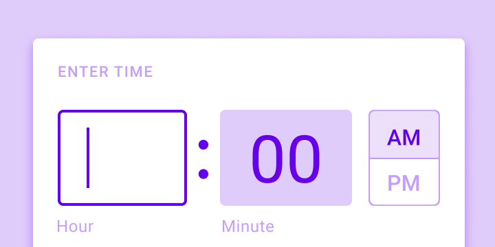
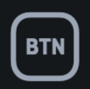
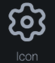
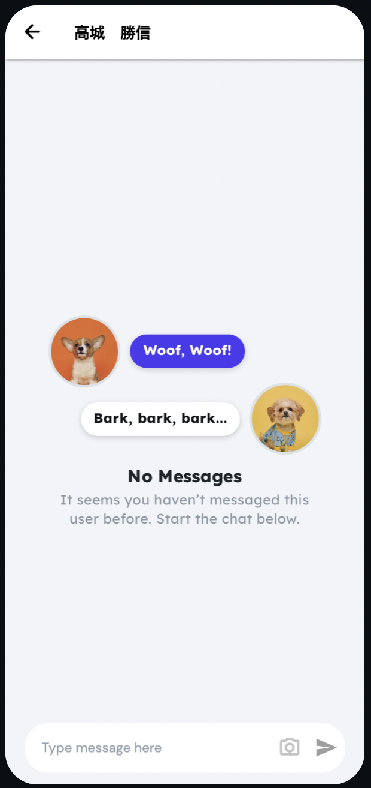

本書のコンセプト
最近はコロナの影響もあり、在宅勤務が推奨され、学校の授業がオンライン化され、買い物はeコマースの利用が増加し、食事の際は出前アプリの利用が流行っています。コロナ以前から社会生活におけるデジタル化の必要性がうたわれていましたが、コロナ渦となり、あらゆる生活シーンでオンライン利用が半強制化され、便利で使いやすいオンラインサービスに対する需要が増しています。
また最近のシステム開発の動きを見ると、いままで「使いづらい」の代名詞であった行政や金融のオンラインサービスに「ユーザ中心設計」を採用し、使いやすくセキュリティ上も安全なサービスに作り替えようとする取組が進められています。またIT化が比較的遅れていた中小企業においてもDX（デジタルトランスフォーメーション）を促進しようとする動きがあります。
このように、あらゆる業界や組織において、あらゆる生活シーンでそれぞれの立場の要望にあった使いやすいオンラインサービスが安価に構築・提供されることが求められています。
一方、これらの要望を担う人材育成の観点では、子供から大人までプログラミング教育がはやっており、例えば文科省は小学校でのプログラミング授業を必須化しています。しかしシステム開発や人材育成においては下記のような課題があると感じています。
- アプリ開発の要件定義や設計フェーズにおいて画面設計に走りがちで、データ構造やロジックの設計がおろそかになり、プログラマーがまともに開発をはじめらずプロジェクトが遅延するといった状況に陥りがちです。このような状況は「デスマーチ」と呼ばれ、20年近くIT企業でアプリ開発をみてきましたが、昔も今もこのような破綻したプロジェクトは大量に発生しています。
- この原因としては、システムデザインについての手法（ドメイン駆動設計やシステムアーキテクチャなど）やその説明が高尚で難しいという問題があります。そのため、本来必要なシステムデザインがスルーされ、スケジュールのプレッシャーもあり、とりあえず簡易な画面設計に走ることにつながるのではと感じています。
- 昨今の人間中心設計の誤った解釈から、システムの顧客接点である画面のデザインがフォーカスされ、発注側の要件定義担当者やデザイナーを含めたプロジェクトメンバーが、本来画面設計の元になるはずのデータモデリングについて理解が乏しいことに原因があるのではとも感じています。例えば、人間中心設計のプロセスで作成するカスタマージャーニーマップはユーザ視点の顧客体験を理解するにはよいのですが、アーキテクト不在の場合、顧客接点の整理をしたらすぐに画面設計にとりかかろうという雰囲気になりがちなので、意識して気をつける必要があります。

- 例えば、過去相談を受けたシステム開発プロジェクトに、業務で扱う情報が整理できておらず各業務ステップで担当者が手動で作業をしているため、残業が減らないのでシステム化して改善したい、というものがありました。ここでもアーキテクト不在で要件定義が進められ、プロジェクトマネージャやデザイナーが画面設計に走り、案の定プロジェクトの半年後はじめからやりなおしになりました。システム化とは業務と情報の整理整頓であり、仕事が複雑になり残業が発生するのもその整理整頓ができていないのがそもそもの原因です。そのため、まずはデータモデリングが必要であることを強く意識しておく必要があるでしょう。
- エンジニア育成という観点からは、従来のプログラミングの学習コンテンツはプログラミング言語の文法を学ぶことが目標となっており、出来上がったプログラムが端末に"Hello World"と表示するといった面白みにかけ作りたいものからかけ離れた学習内容になっていることが多いです。そのため学習自体に面白味がなく、初心者の時点からやる気をなくしてしまいます。
- 最近の子供向けプログラミング授業用ソフトは使いやすく、見た目がよく、マウス操作でプログラミングの論理的思考が学べるといったすぐれた面がある一方、汎用的なアプリケーションを開発するため使えないといった欠点もあります。学習指導要領上、小学校からプログラミング教育が必須化する理由は「プログラミング的思考をやしなうため」「順序立てて考え、試行錯誤し、ものごとを解決する力を身につけるため」であることはわかるのですが、教科書で決められた作り込まれたソフトを使っているので汎用性がなく学習した後のその先がないため少し残念です。
以上のことから、エンジニアだけでなく発注側顧客企業の担当者やプロジェクトマネージャもユースケースからデータモデルに落とす考え方やデータモデルから画面設計を行うための考え方、さらにはこれらのパターンを知っていることが望まれます。
そこで本書では。またエンジニア育成という観点では、アイデアが浮かんだらすぐに完成品までもっていけるよう効率的で汎用的なノーコードアプリであるFlutterFlowを選び、それらのハンズオンを掲載しています。
様々な立場の人が本書を読みハンズオンを試してもらうことで「こんなに簡単に作れるんだ」とものづくりに興味をもってもらい、自分たちが実現したいシステムを自らが構築するマインドをもっていただく一助になればと思っています。また本書をとおしてIT技術の活用が民主化されることで、自らの会社や組織、業界においてより価値を産むアイデア考察に積極的になり、それらを自ら実現した便利で使いやすいオンラインサービスが世に増えることを願っています。
本書で学ぶこと
- GoogleやFlutterFlowの無料アカウントの登録方法とログインのしくみ
- FlutterFlowの基本的な使い方
- マテリアルデザインをベースとした画面デザイン
- Firebaseの主要サービスの使い方（認証とNoSQLデータベース、通知機能など）
- 世の中にある主要なアプリケーションパターンとFlutterFlowを使った実装
ライセンス
Copyright 2022 RISA Co., LTD.
ここでは画面設計に関連して、スマホアプリのUIデザインについて記述します。世の中のスマホといえば、iPhoneとAndroidの2種類ですが、それぞれAppleとGoogleがUIデザインのガイドラインを出しています。iPhoneはヒューマン・インタフェース・ガイドライン、Androidではマテリアル・デザインです。各ガイドラインの紹介をする前に、スマホアプリ特有の問題からデザインの歴史を説明してから、ヒューマン・インタフェース・ガイドラインとマテリアルデザインの紹介をします。
1. スマホの特徴
スマホには、パソコンとは異なる2つの特徴があります。
画面が小さく操作手段が限定的
スマホは画面が小さく、さらにマウスやキーボードがないため操作手段が限定されるため、画面レイアウトや操作方法をどのようにデザインするかでユーザ満足度が大きく変化します。
画面サイズがばらばら
AndroidとiPhoneという違いだけでなく、同種のスマホでも画面サイズが様々で、アプリのレイアウト幅や高さを固定すると画面表示が崩れて使い物にならなくなります。例えば、歴代のiPhoneを比べても下図のとおり様々な画面サイズが存在しますし、Androidは各デバイス開発会社が様々なものを出しているのでiPhone以上に画面サイズはバラバラです。

2. スマホアプリで発生しやすい問題
Google PlayやApp Storeに登録された実際のアプリの評判からまとめたスマホアプリに対するよくある悪評は主に以下の4つに集約されます。
- 操作途中でクラッシュしてしまう
- ナビ機能が不十分で、元の画面に戻れない、探している機能に行き着かない
- デザインが必要以上に凝っていたり意味不明のため使えない
- 大量の情報がそのまま表示され、検索したりフィルタリングする機能がない
これらの悪評のうち、1以外の2から4まではUIデザインの問題といえます。
3. スマホデザインの歴史
それではスマホにおけるデザインはどのような歴史を歩んできたのでしょうか。
まず、2000年前半のWebやアプリケーションのUIはそれまでのWindowsパソコンが機械的で使いづらく利用者のことを考えて作られていないという反省から、現実世界を模した装飾的なデザインからなるUIを取り入れるようになりました。この考え方によるデザインをスキューモーフィズムと呼びます。ただし、この装飾に凝ったデザインでは、デザイナーの主張が先行し、見た目や操作性に統一感がないといった弊害を生むことになりました。
そのため、20世紀初頭にモダニズムが建築や工業製品のデザインに取り入れられたように、パソコンやWebやスマホのデザインにも極力装飾を廃したフラットデザインが採用されることになりました。このフラットデザインを採用しているのがAppleです。AppleはiPhone 7のデザインにフラットデザインを取り入れ、ヒューマン・インタフェース・ガイドラインもそれにのっとったガイドラインを発表しています。
iPhone6のスキューモーフィズム | iPhone7のフラットデザイン |
しかし、フラットデザインはシンプルすぎて、システムの構造やしくみが理解しづらいといったデメリットが挙げられます。そこで、Googleはフラットデザインとスキューモフィズムの中間をとり、さらに発展させた「マテリアル・デザイン」を定義し、2014年にだれもが参照して利用できるオープンソースな形でデザインガイドラインを発表しました。
本書では、ヒューマン・インタフェース・ガイドラインの概要を述べるものの、マテリアル・デザインをメインに説明します。また、本書で利用している開発プラットフォームであるFlutterもマテリアルデザインを全面的に採用しており、AndroidはもとよりiPhoneでもマテリアルデザインを実装することができるツールであるため、本書においては開発全般でマテリアルデザインを採用しています。
4. ヒューマン・インタフェース・ガイドラインとは？
ヒューマン・インタフェース・ガイドラインでは3つのデザインテーマと6つのデザイン原則とその他設計の詳細が記載されていますが、ここでは3つのデザインテーマと6つのデザイン原則を紹介します。
①3つのデザインテーマ
iOSアプリは「明確であること」「コンテンツにフォーカスすること」「奥行きがあること」の3つのデザインテーマにのっとってデザインすることを推奨しています。
1. 明確であること
あらゆる画面サイズのスマホデバイスで、テキストは読みやすく、アイコンは明快で、装飾は繊細で適度であり、かつ機能的であることが必要です。空間、色、フォント、グラフィック、インターフェイスに関する各要素は、重要なコンテンツは適度に強調されインタラクティブ性を向上します。
2. コンテンツにフォーカスすること
滑らかな動きと鮮明で美しいインターフェースは、ユーザが操作に迷うことなく、コンテンツを理解して操作するのに役立ちます。通常、コンテンツは背景の上に表示されますが、背景を半透明にするなどの工夫で、より多くのことを示唆します。ベゼル、グラデーション、ドロップシャドウの使用を最小限に抑えながら、コンテンツを最優先に表示することで、インターフェイスを明るくわかりやすくします。
3. 奥行きがあること
明確な視覚的レイヤーとリアルな動きが階層を伝え、画面に活力を与え、ユーザに理解を促進します。接触の感覚と発見のしやすさはユーザに喜びを高め、コンテキストを失うことなく機能と追加コンテンツへのアクセスを可能にします。画面遷移時には、奥行き感のあるコンテンツのナビゲーションを提供します。
②6つのデザイン原則
iOSアプリは、ユーザへのインパクトとリーチを最大化するため、アプリのアイデンティティを強化するため、次の原則に従うことを推奨しています。
1. 美的完全性
美的完全性は、アプリの外観と動作がその機能とどれだけうまく統合されているかを表します。たとえば、ユーザが慎重を期す作業をするアプリでは、微妙で目立たないグラフィックと標準的な操作、予測可能な動作を提示することで集中力を維持できます。一方、ゲームなどの没入型アプリでは、発見を促しながら楽しさと興奮をうながす魅力的な外観を提供するとよいでしょう。
2. 一貫性
一貫性のあるアプリはシステムが提供するインターフェース要素とよく知られたアイコン、標準のテキストスタイル、統一された用語を使用することで、使い慣れた標準的な印象を与えます。このようなアプリはユーザが期待する方法で機能と動作を組み込んでいます。
3. 直接的な操作
画面上のコンテンツを操作することで、ユーザを引き付け、理解を促進します。ユーザは、デバイスを回転させたり、ジェスチャーを使用して画面上のコンテンツに影響を与えたりして直接的な操作を体験します。直接的な操作を通じて自らの行動が即時にアプリに影響を与えることを体験するわけです。
4. フィードバック
フィードバックは行動を認め、結果を示して人々に情報を提供し続けます。組み込みのiOSアプリは、すべてのユーザーアクションに応答して知覚可能なフィードバックを提供します。インタラクティブな要素をタップすると簡単に強調表示され、進行状況インジケーターが長時間実行されている操作のステータスを伝え、アニメーションとサウンドがアクションの結果を明確にするのに役立ちます。
5. メタファー
アプリの仮想オブジェクトとアクションが、現実の世界に根ざしているのかデジタルの世界に根ざしているのかにかかわらず、身近な体験のメタファーである場合、ユーザはより迅速に学習します。ユーザが画面を物理的に操作するため、メタファーはiOSでうまく機能します。ビューを邪魔にならないように移動して、下のコンテンツを公開します。コンテンツをドラッグしてスワイプします。スイッチを切り替えたり、スライダーを移動したり、ピッカーの値をスクロールしたりします。ユーザは本や雑誌のページをめくることさえします。
6. ユーザーコントロール
アプリはユーザーが制御します。アプリは一連の行動を提案したり、危険な結果について警告したりできますが、アプリは意思決定をしません。最高のアプリは、ユーザーを有効にすることと望ましくない結果を回避することの間の正しいバランスを持ちます。アプリは、インタラクティブな要素を使い慣れた予測可能な状態に保ち、破壊的なアクションを確認し、すでに進行中の場合でも操作を簡単にキャンセルできるようにすることで、ユーザーがアプリをコントロールしているように感じさせることができます。
5. マテリアルデザインとは？
マテリアルデザインとは、Googleが2014年に発表したUIのデザインガイドラインです。元々Googleは、Gmailなどの数多くのアプリを世に出していましたが、それらがパソコン、Android、iPhone、タブレットなど異なるデバイスで利用されるとき、画面サイズもOSも異なるため、異なった見た目と操作性を持ってしまったことを問題視していました。そこで、デバイスが異なっていても、統一したデザインで操作できるようなUIデザインのガイドラインを作る目的で開発されたのがマテリアルデザインです。例えば、スマホのようなデバイス用には、片手で操作することを想定し、直感的で意味のある物理的（マテリアル）な概念をデザインに取り入れてガイドラインが策定されています。また、明示はされていませんが、ユーザ インタフェースという意味では、ヒューマン・インタフェース・ガイドラインで挙げた3つのデザインテーマと6つのデザイン原則は、マテリアルデザインでも目指すところは同じです。
マテリアルデザインは、あくまでもガイドラインであるため、必ず準拠すべきものではありませんが、デザインの部品がどのような形でどのように動くかが細かく規定されており、Java、Kotlin、Swift、JavaScript、Flutterといったさまざまな言語に対応した無料で利用できるプログラムライブラリとともに提供されているため、まるまる採用することで一定レベル以上のUIデザインのアプリを最小のコストで開発することができます。そのため、多くのプロジェクトで採用されるに至っています。
①マテリアルデザインの4つの考え方
マテリアルデザインは以下の4つのコンセプトからなりたっています。
1. 形をもった面
形をもったうすい紙のような面が重なって画面を表示するしくみを採用しています。この考え方によって、一枚の紙を切って分割して記事を表示したり、メニューやフッターを表示するための紙と中心のコンテンツをのせるための紙が重なって表示されることを影を使って表現することができます。これによって実際は奥行きがなくフラットなスマホの画面を立体的に表現することによって、表示されているものの種類が区別しやすくなったり、高さを使うことで手前にあるものほど重要といったユーザが3次元の世界で感じるのと同じくどこに注意をむけるべきかを直感的に知らせることができるようになっています。

2. 印刷物のようなデザイン
文字や絵が紙に載っているという概念からなり、ベースラインやキーラインといった印刷物のコンセプトを踏襲しています。ベースラインを決めることでコンテンツが収まる範囲を決めたり、本文やタイトルなどはキーラインを基準に配置するなど、印刷用にワードなどに設定する値などを応用することで、見た目に統一感を持たせて画面を美しくみせます。また見やすいフォントやアイコンが無料で提供されています。
3. 意味のあるアニメーション
ユーザになんらかの意味を伝えるためにはアニメーションが効果的な場合がありますが、コンポーネントにアニメーション表示を簡単にほどこせるようなしくみを実装しています。
4. アダプティブデザイン
パソコン、Androidスマホ、iPhone、タブレットなどデバイスが異なり画面サイズが異なっていても形を崩さず表示するしくみを実装しています。レスポンシブデザインも同じコンセプトですが、アダプティブデザインは横幅の伸び縮みだけでなく、メニューの表示非表示などを含む、より画面サイズに応じた（アダプティブな）形でデザインを変化させるしくみをそなえています。
②Flutterにおけるマテリアルデザイン
マテリアルデザインを使うと下記のようなリッチなUI画面を実装することができます。下記リンクを開くとFlutterを使って実装したUI画面のサンプルギャラリーが参照できます。
またFlutterでは、下記のようなマテリアルデザインの部品が提供されています。このように画面にのせる部品はたくさん存在しているので、それぞれ何ができるかだけ覚えておいて、画面パターンに従って使う部品を選別してから詳細の実装方法を調べるのがよいでしょう。
|
|
| |
|
|
| |
|
|
| |
|
| ||
|
| ||
|
 | ||


③カラーテーマ
マテリアルデザインはアプリのブランディングを統一的に進めるためにカラーテーマというしくみを採用し、アプリケーション全体で部品の色やフォントカラーを統一させることが可能です。逆に言うと、同じアプリでもカラーテーマを変えてイメージの異なるアプリとして仕上げることが可能ですので、アプリケーションのテンプレートを先に作っておいて様々なプロジェクトに応用する場合にもこのようなしくみは役に立つでしょう。
カラーテーマ：https://material.io/design/color/the-color-system.html
カラーツール：https://material.io/resources/color/
④マテリアルデザインの発展
マテリアルデザインは単なる画面と画面遷移にとどまらず、音声や機械学習に関するUIについても拡張し、ガイドラインを提供しています。
機械学習機能に関するマテリアルデザイン：https://material.io/design/machine-learning/understanding-ml-patterns.html
音声に関するマテリアルデザイン：https://material.io/design/sound/about-sound.html
これらはスマホにかかわらず、スマートウォッチ、スマートスピーカーやスマートイヤフォン、スマートグラスなどにもマテリアルデザインを適用していこうという取り組みのあらわれであり、次章で紹介するFlutterという開発環境も同じ目的で開発が進められています。
2021年5月のGoogle I/OにおいてAndroid12のリリースにあわせてマテリアルデザインの更新がなされています。ここでは、スキューモフィズム的なモノを表現する普遍的なロゴデザインを継承しつつ、高度にパーソナライズすることができ、仕事とプライベートの切り替えが用意でモダニズム的な要素を加えたデザインを目指したとのことです。具体的には、新しいテクノロジーを快適に使えること、デバイスやアプリとの境界線を無くすような慣習に挑戦すること（イコノクラスム）、入力に反応する有機的な動きなど自然界のスピリットを取り入れることを目指しています。また、壁紙の色使いにあわせてパーソナライズされたカラーパレットを適切に自動設定してくれるダイナミックカラーという機能を有しています。今後カラーツール等にもこれらの自動化機能が付与されてくるかもしれません。
このようにマテリアルデザインは、いま世界で最も適切にデザインされ、オープンで誰にでも利用可能で、いまだ活発に進化を続けている生きているデザインシステムといえます。
6. デザインシステム
通常、アプリケーションの開発プロジェクトでは、事前にマテリアルデザインのようなデザインフレームワークからプロジェクトで活用するレイアウトや部品を選択してカラーテーマやフォントを決めて、アプリのブランドに統一感を持たせることをします。このようなデザイン原則とデザインフレームワークの組み合わせを「デザインシステム」と呼びます。
最近日本国内でも「みんなの銀行」や「デジタル庁」でもデザイン原則やシステムデザインを整備してWebサイトを作るといったアプリ開発を行うことがはじまっています。Webサイトといった単純なUIだけならデザインシステムもロゴやカラーデザインや画面テンプレート程度を決めるだけですみますが、スマホアプリのデザインシステムというとより複雑な機能を含みますので、これを一から作るのは大変な労力がかかります。
そのため、本書ではマテリアルデザインをまるまるデザインシステムとして採用してスマホアプリを開発します。サービスのブランディングに関わるロゴやイラスト、カラーデザインをカスタマイズする機能もマテリアルデザインを支えるFlutterのようなツールにも開発が進められていますので、これを使わない手はないでしょう。
Copyright 2022 RISA Co., LTD.
本書では、開発環境にGoogleがオープンソースとして開発しているクロスプラットフォーム開発環境であるFlutterを、インフラ環境にはGoogle Cloud Platform上のモバイル開発用クラウドプラットフォームであるFirebaseを、ノーコード開発環境にFlutterFlowを利用します。本章ではこれらを選定した根拠を記載し、さらにベンダーロックインを排除するための代替案をまとめます。
1. Flutterの選択根拠
最近のスマホアプリ開発では「あらゆるデバイス向けにネイティブアプリを開発しメンテナンスをする」か「特定のクロスプラットフォームフレームワークを選択して一つのコードをメンテナンスする」かを選択する必要があると言われています。
「あらゆるデバイス向けにネイティブアプリを開発しメンテナンスをする」を選択しているのは現在スマホアプリをリリースする企業の80%に上り、ネイティブアプリ開発により得られる操作性のよさと引き換えにiPhoneとAndroid用に2つのソースコードで開発し、両プラットフォーム用に卓越したプログラマーを雇い、コストをかけて運用しています。一方「特定のクロスプラットフォームフレームワークを選択して一つのコードをメンテナンスする」を選択する場合、開発されるアプリケーションはネイティブアプリより操作性や機能は劣りますが、両方をネイティブ開発するより半分程度のコストですむことになります。下図はデバイスごとに開発プロジェクトを作成してネイティブアプリを開発する場合と特定のフレームワークを選択して単一のプロジェクトを開発する場合との開発の困難さと開発されるアプリについて表したものです。
参考）Why choose Flutter for your company?
しかし、Flutterは第三の選択肢として機能します。FlutterはDart言語でプログラミングすると完全にネイティブなiOS用コードとAndroid用コードを生成してくれます。さらにはこれをリアルタイムで行うため、開発したスマホアプリを動かしながらDart言語によるソースコードを修正し、画面を修正することができます（この機能をホットリロードといいます）。このようにFlutterを使うことで、ワンコードで同じUIのiPhoneとAndroid両方のネイティブアプリを開発することが可能になります。
またFlutterを選択することで得られるビジネス上のメリットを以下に示します。
- アプリ投入までの時間短縮：Flutterはワンコードでネイティブアプリを開発できるのはもちろん、マテリアルデザインをサポートしており画面実装に必要な部品を標準で利用することができることやインターネット経由でのAPI操作に適した非同期処理を直感的に操作しやすいDart言語の特徴により一定レベル以上のアプリを開発する際の開発スピードを早めることができます。
- 高品質のルックアンドフィール：Flutterはピクセルレベルのデザインの実装が可能であり、リッチなマテリアルデザインベースの部品やアニメーションのしくみを有しているので、デザイナーはフレームワークの制約で妥協することなくブランディングを優先して様々なアイデアのデザインを行うことができます。
- 手ごろなコスト：Flutterはオープンソースでコミュニティベースで開発されているため、ツール採用のために必要なコストはありません。また、Java開発者のようなオブジェクト指向言語経験者ならDart言語の学習はそれほど難しくなく、エンジニア育成コストもそれほど高くありません。
- リーチとリテンション：リッチなデザインの操作性のよいネイティブアプリをiPhoneとAndroid向けに同時にリリースできるため、世の中のすべてのユーザにリーチできます。また使い勝手がよいアプリの提供によりユーザのリテンション（維持・保持）率もアップします。
なお、Flutterと比較されるクロスプラットフォーム開発環境と特徴を以下に紹介します。
- Cordova: HTML5とCSS、JavaScriptを使ってiPhoneとAndroid共通のUI部分を実装し、プラットフォーム依存の部分をプラットフォームにあわせてプラグインとして開発することでクロスプラットフォームを実現します。そのため、操作性や機能に制限があり、ネイティブな機能を使う場合には両プラットフォーム用にプラグイン開発が発生します。
- ReactNative: Facebookが開発したクロスプラットフォーム開発環境で、JavaScriptで開発をします。一つのコードからiPhoneとAndroid用のネイティブコードを生成しますが、生成に時間が発生し、ホットリロードができません。
- Xamarin: マイクロソフトが開発するクロスプラットフォーム開発環境で、C#で開発をします。Flutterと同じくネイティブコードを生成し、最近ホットリロードにも対応していますが、描画スピードに乏しいのが欠点です。またコミュニティサポートが不十分であるため、Flutterほど情報があり、人気があるとはいえません。
以上のことを総合的に判断し、Flutterをベストな選択であると考え採用しました。
Flutterのよさだけを強調すると初めての方は少ない知識で何も考慮することなくアプリが開発できると勘違いするとよくないので、Flutterを正しく学ぶためのマインドセットを最後に紹介します。
- Flutterのベース言語であるDart言語のコンセプトと特徴を学ぶこと
Flutterはスマホアプリ開発に必要なプログラミング言語のコンセプトを持ち、Flutterと同期しながら進化しているDartという言語をベース言語に採用しています。本書では「Dart言語の基礎」でハンズオン付きで解説します。 - 状態管理と関心の分離
通常アプリケーションは画面と画面遷移から成り立ちますが、その遷移中に永続化して保持したいデータがあります。そのことを状態と呼びますが、Flutterでもこの状態管理方法を選択することは悩ましい課題です。また、FlutterはUIロジックとビジネスロジックを分離する制約を言語として持ち合わせていません。そのため、開発者がBLoCパターンなどのデザインパターンを自ら採用してルール化してプログラミングする必要があります。本書では「状態管理とBLoCパターンによる関心の分離」で解説します。 - ネイティブコードの知識
Flutterがいくらクロスプラットフォーム対応であると言っても最終的にはネイティブコードとしてコンパイルされ、iPhone、Android、Webアプリ、Windows、Mac、ChromeBook、Linuxといった各プラットフォーム独自のルールとしきたりにあわせてリリースされるため、ネイティブコードの知識は不可欠です。
※ 本記事は下記の動画を参考に作成しました。
https://www.youtube.com/watch?v=kD-1dZBmRPU
2. Firebaseの選択根拠
本書で開発するレストランレビューアプリもそうですが、世の中のスマホアプリはインターネット上のサーバと連携してサービスを提供します。通常インターネット上のサーバはアプリに入力したデータを保存したり、アプリに表示するデータを提供するデータベースが主要な機能になりますが、スマホアプリからのアクセスに通常のWebアプリが採用しているODBCやJDBCのようなしくみを選択するのはセキュリティ上の理由からも推奨されません。そのため、アプリからのアクセスの際、テーブルへのCRUDのどの機能が必要かを考えてAPIを開発し、さらに認証認可のしくみを実装することが必要になります。
一方、Firebaseは、アプリにログインする認証のしくみ（Firebase Auth）とアプリと安全にコネクションを繋いだままストリーム処理が可能なデータベース（Firestore）、写真などの大きめのバイナリファイルを保存するためのストレージ（Firestorage）といったサービスを提供します。またクライアント用には、Firebase Authで認証されたユーザIDと紐づけてFirestoreデータベースにデータを保存したり、FirestorageのURIをFirestoreデータベースに保存して利用する機能を、様々なプログラミング言語向けに標準的なSDKとして提供されています。そのため、一からバックエンドのサービスを開発するのに比べ、基本的な機能をほとんど開発する必要がないため、開発工数を劇的に削減することができます。
※ Firebase Authにおけるブルートフォース攻撃対策については下記記事を参照してください。
https://medium.com/swlh/google-firebase-authentication-vulnerability-245050cb7ceb
さらには、FirebaseはA/Bテストを行う機能やスマホアプリのクラッシュログを収集する機能、ユーザがどの画面のどのボタンをクリックしたかといった動線を集計する機能、スマホアプリをテストユーザに配布する機能などモバイルアプリ用に豊富な機能を安価に提供しているため、多くのモバイルアプリ開発者に採用されています。
以上の理由から本書ではバックエンドの機能にFirebaseを採用することにしました。
3. FlutterFlowの選択根拠
あああ。
4. ベンダーロックインの排除
企業におけるITツールの選定で気をつけるべき点にベンダーロックインの排除が挙げられます。というのも、採用技術の開発が止まったり急に利用コストが値上げされ別の方法を模索しなければならなくなったり、アプリを横展開して他社に提供する場合先方のプラットフォームにあわせなければならない、といったことがありうるため、採用時のメリデメだけでなく他に乗り換える可能性も考慮しなければなりません。
まず開発環境としてのFlutterについては、100%オープンソースであり、プロジェクトがストップしたりいきなり有料サービスになることは、いまとなってはまずあり得ないため、Flutterを採用することによるベンダーロックインはありえないと考えてよいでしょう。
一方、Firebaseについてはアプリの横展開をする際にクラウドサービスを使いたくないケースが考えられるので、なんらかの代替案を考える必要があります。Firebaseのサービスごとに代替案を以下に紹介します。
- Firebase Auth：独自に認証サーバを立ち上げたり、Keycloakのような統合認証認可サービスを立ち上げてユーザ管理をすることで代替できます。
- Cloud Firestore：OIDC認証のしくみはKeycloakのクライアントプラグインを使って実装することで実現できます。ドキュメント型データベースとしてmongoDBがあげられるので、ストリーム型でアプリから連携できるようgRPCで公開し、Dart言語のgRPCクライアントを開発しFlutterで利用することで実現できます。ただし、Firestoreで実現しているセキュリティルールやオフライン機能や差分のみをやりとりする機能などの高度な機能の実装は困難なので、アプリの使い勝手は悪くなると思われます。
- Firebase Storage：Keycloakのような認証サービスと連携したストレージサービスを開発するのは難しいので、データベースにサイズを小さくしたバイナリとして保存するようにするとよいでしょう。
- FlutterFlow：あああ
Copyright 2020 RISA Co., LTD.
GoogleはGmailやGoogleスプレッドシート等々Webから利用可能な有益なアプリケーションを無料で提供しています。強靭で使いやすいセキュリティ基盤の上にこれらのサービスが提供されており、Gmailアカウントを作成することなく自分が持っている既存のメールアドレスを使ってGoogleアカウントを作成することができますので、大学のメールアドレスを使ってGoogleアカウントを追加するなどして授業にも利用することもできます。ここでは、既存のメールアドレスを使ってGoogleアカウントを作成する手順を紹介します。
1. Googleアカウント作成
Googleアカウントを作成する下記URLにアクセスします。
https://accounts.google.com/signup/v2/webcreateaccount?flowName=GlifWebSignIn&flowEntry=SignUp
「姓」「名」に自分の名前を入れて、「代わりに現在のメールアドレスを使用」を選択してメールアドレスに自分のメアドを入力して、パスワードを入力して「次へ」ボタンをクリックします。

自分のメアドに送られてきたメールに記載された数字をメモし、次画面に入力するとアカウント作成が完了します。
2. Googleログイン
下記URLにアクセスして画面右上の「Googleアカウントに移動」ボタンをクリックして、登録したASUメアドとパスワードでログインします。
Copyright 2022 RISA Co., LTD.
FlutterFlowにGoogleアカウントのユーザを登録します。
1. FlutterFlowへのユーザ登録
下記URLにアクセスして画面右上の「Start for free」ボタンをクリックします。
「Create Account」画面が表示されるので、画面下の「Google」ボタンをクリックします。

2. Googleアカウントでユーザ登録
Googleログインのダイアログが表示されるので、そこからASUメアドを選択します。

次ページでアンケートを聞かれることがあるので適当にチェックを入れて回答します。
登録が完了すると「Welcome to FlutterFlow」という画面が表示されます。
Copyright 2022 RISA Co., LTD.
eコマースサイトやチャットアプリなどユーザの区別が必要だったり、秘匿情報を扱うアプリケーションではユーザ登録とログインが必要であるため、アプリケーションの基本はログイン画面です。ここではFirebaseが提供する認証のしくみとFlutterFlowを組み合わせたログインアプリを作成します。
前提条件
- Firebaseと連携したFlutterFlowのプロジェクトが作成されていること。
1. FlutterFlowにログイン
下記URLにアクセスして「Google」ボタンをクリックしてログインします。

2. FlutterFlowプロジェクトの選択
FlutterFlowのダッシュボード上で「ASU...」から始まる名前のプロジェクトを選択します。

3. 「UI Builder」でログイン画面作成
ログインすると下図の画面（UIビルダー）が表示されるので、左側のパレット上にあるアイコンを中央の画面にドラッグ＆ドロップしながらログイン画面を作成していきます。

① LoginPageの選択
画面右上の選択肢から「LoginPage」を選択します。
② Rowの追加
Row  アイコンを中央のアプリ画面の白いエリア（Column）にドラッグ＆ドロップします。
アイコンを中央のアプリ画面の白いエリア（Column）にドラッグ＆ドロップします。

③ 再度Rowの追加
もう一度Rowアイコンを中央のアプリ画面の白いエリア（Column（カラム））にドラッグ＆ドロップし、二行にします。

④ ボタンの追加
ボタン  アイコンを二行のRowアイコンの下にドラッグ＆ドロップします（ボタンアイコンは左側のアイコンリストをスクロールすると下の方にあります）。

⑤ Scrollable有効化
アプリ画面の白い部分をクリックしColumnを選択して右側のパレットに注目し、Scrollableを有効化します。

⑥ Columnにパディング追加
パレット上部のPadding（パディング）で真ん中のロックをクリックしてロック上部に10と入力して上下左右4ヶ所すべてを10に設定します。
すると下記のような配置になります。

⑦ eメール入力用TextFieldの追加
左パレットのTextField  アイコンを、さきほど配置した上のRowにドラッグ&ドロップします。
アイコンを、さきほど配置した上のRowにドラッグ&ドロップします。
「TextField」をクリックした状態で右側のパレットに注目します。
「Padding & Alignment 」でロックアイコンをクリックして四方に5を入力します。
パレット下部の「Label Text」に「eメール：」と入力します。
パレット下部の「Input Border Type」で「Outline」を選択し、「Border Color」で「Simple」ボタンをクリックして表示される色の中から黒を選択すると「Black」が選択されます。
「Content Padding」でロックアイコンをクリックして四方に5を入力します。
⑧ パスワード入力用TextFieldの追加
左パレットのTextField アイコンを、二つ目のRowにドラッグ&ドロップします。
「TextField」をクリックした状態で右側のパレットに注目します。
「Padding & Alignment 」でロックアイコンをクリックして四方に5を入力します。
パレット下部の「Password Field」にチェックを入れ「Label Text」に「パスワード：」と入力します。
パレット下部の「Input Border Type」で「Outline」を選択し、「Border Color」で「Simple」ボタンをクリックして表示される色の中から黒を選択すると「Black」が選択されます。
「Content Padding」でロックアイコンをクリックして四方に5を入力します。
4. ログインの設定
ログインを行うロジックを作成していきます。
① ログインページとホームページの設定
左端のメニューから設定アイコンをクリックし、その右から「Authentication」を選択し、右の画面で「Enable Authentication」にチェックをいれます。すると「Initial Page」が表示されるので、「Entry Page」で「LoginPage」、「LoggedIn Page」で「HomePage」を選択します。
② ログインアクションを追加
ログイン画面でボタンをクリックした際のアクションの設定を行います。
- 画面左端の「UI Builder」アイコンをクリックします。
- 画面右上の選択肢が「LoginPage」になっていることを確認します。
- 「Button」をクリックし右に表示されるパレットのアクションアイコンをクリックします。
- 「+ Add Action」ボタンをクリックして表示される「Select Action」のテキストフィールドに「login」と入力して、リストの一番下にある「Authentication」をクリックし、展開表示される「Log in」をクリックします。

- 「Define Action」の「Auth Provider」で「Email」を選択し、「Email Field」で「Text Field 1」、「Password Field」で「Password Field1」を選択します。
以上でログインボタンを押した時のアクションの設定は完了です。
③ ログアウトアクションの追加
ログイン後に表示される「HomePage」にログアウトボタンを追加します。
- 画面右上の「LoginPage」をクリックして「HomePage」に切り替えます。

- 「Page Title」の右側に左側からボタンをドラッグ＆ドロップします。

- 追加したボタンを選択した状態で右側のパレットに表示されるテキスト「Button」を「ログアウト」に編集します。

- 右側パレット上部のアクションアイコンをクリックし、「+ Add Action」ボタンをクリックして表示される「Select Action」のテキストフィールドに「logout」と入力して、リストの一番下にある「Authentication」をクリックし、展開表示される「Logout」をクリックします。

以上でログアウトボタンの設定が完了しました。
④ ログインアプリの実行
画面右上の「Run」ボタンをクリックします。
すると新しいタブが開いて下記の画面が表示されます。これは作成したログイン画面がビルドされていることを表しており、ビルドが完成するまで数分まってください。
すると下図のようなアプリ画面が表示されるので、自分のメアドとパスワードには「password」と入れてボタンをクリックします。
ログインが成功すると下図の画面が表示されるので、ログアウトボタンをクリックしてログイン画面に戻ります。
以上でログインアプリの完成です。
Copyright 2022 RISA Co., LTD.
一対一チャットの設定を行います。
前提条件
- Firebaseと連携したFlutterFlowのログインアプリが作成されていること。
- Firebase Authにユーザが２名登録されていること。
- ChatPageとAllChatPageが登録されていること。
- FlutterFlowにログインしていること。
1. FlutterFlowプロジェクトの選択
FlutterFlowのダッシュボード上で「ASU...」から始まる名前のプロジェクトを選択します。
左のメニューから「Pages & Components」アイコン をクリックして「LoginPage」「HomePage」「ChatPage」「AllChatPage」の4つのページが作られていることを確認し、「HomePage」を選択します。
2. チャットの設定
「HomePage」にチャット相手のリストと「ChatPage」に遷移する設定を行います。
① ListViewの設定
UI Builderを表示し、左のパレットからListView をColumn上に載せます。
右のパレット上のBackend Queryタブ を選択し、表示される画面に「Query Type」に「Query Collection」、「Collection」に「users」、「Query Type」に「List of Documents」を選択し、「Exclude Current User」にチェックを入れて「Save」ボタンをクリックします。
下記のダイアログが表示されるので、OKボタンをクリックします。
② Cardの設定
ListView上にCard をのせ、右パレット上のPaddingを5に設定し、Elevationを10に設定します。
Card上にRowをのせ、Row上に左からImage、Text、Iconを乗せ、RowのPaddingを5に設定し、Main Axis Alignmentで を選択します。
③ Imageの設定
Imageを選択して右パレット上のPath右のオレンジ文字「Set from Variable」をクリックし、表示される画面で「Source」で「users Record (from ListView)」、「Available Options」で「photo_url」を選択し、「Save」ボタンをクリックします。
④ Textの設定
Textを選択して右パレット上の「Hello World」上のオレンジ文字「Set from Variable」をクリックし、表示される画面で「Source」で「users Record (from ListView)」、「Available Options」で「email」を選択し、「Save」ボタンをクリックします。
⑤ Iconの設定
Iconを選択して右パレット上の「Setting Outlined」を選択して、開いたダイアログ上の「Search icons...」に「send」を入力して表示される矢印アイコンを選択します。
さらに右パレット上の「Actions」タブをクリックし、「+ Add Action」ボタンをクリックし、「Navigate To」から「ChatPage」を選択します。
また、「ChatPage」に変数値をPathするために「Parameters」の「Pass」をクリックします。すると「chatUser」が自動セットされますので、右の ボタンをクリックして設定を開き、「Source」で「users Record (from ListView)」を選択します。
以上でチャットアプリの完成です。
⑥ チャットアプリの実行
画面右上の「Run」ボタンをクリックします。
すると新しいタブが開いて下記の画面が表示されます。これは作成したログイン画面がビルドされていることを表しており、ビルドが完成するまで数分まってください。
すると下図のようなログイン画面が表示されるので、今回は「eメール」に「test@test.com」、パスワードには「password」と入れてログインボタンをクリックします。
ログインが成功するとチャット可能なユーザとして自分のASUメアドが表示されるので矢印アイコンをクリックします。
チャットが可能になります。

以上で1対1のチャットアプリの完成です。
Copyright 2022 RISA Co., LTD.
アプリを広く公開して利用できるようにします。
前提条件
- FlutterFlowにログインしていること。
1. 実行アプリの選択
過去にコンパイルしたアプリに再度アクセスするために画面右上のRUNボタンの右端のをクリックしてリストされる「Project Run Versions」から一番上の緑色のリンクをクリックして最新のアプリケーションにアクセスします。
2. アプリの公開
画面右上の「Make Public」ボタンをクリックして、ビルドしたアプリを公開モードにします。
3. URLのQRコード化
ブラウザ上部のURLをコピーして「https://qr.quel.jp/」にアクセスしてURLをコピペしてOKボタンをクリックしてQRコードを作成します。
4. QRコードの共有と
スマホからQRコードを読み取って「test@test.com」ユーザでログインし、パソコンのユーザとチャットができるか試します。
Copyright 2022 RISA Co., LTD.
（TODO）
Copyright 2022 RISA Co., LTD.